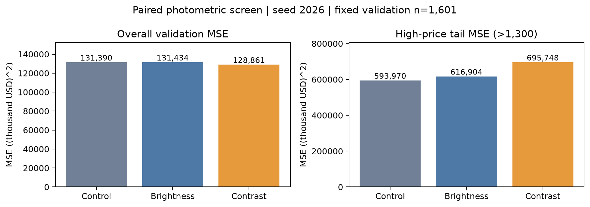
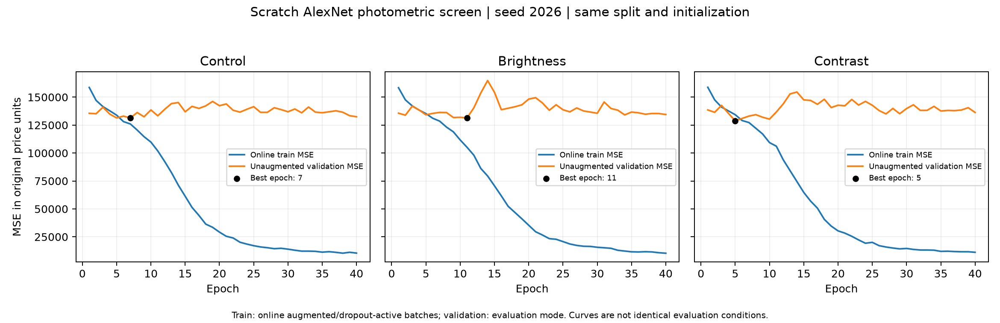
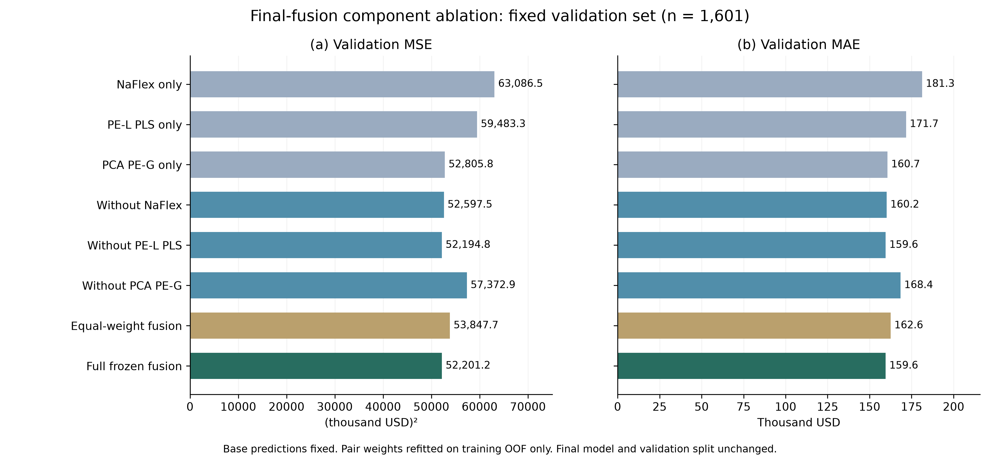
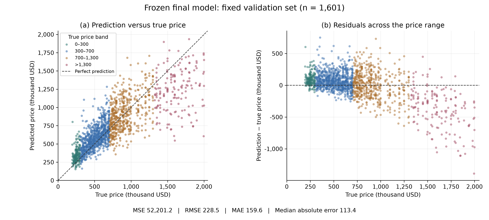
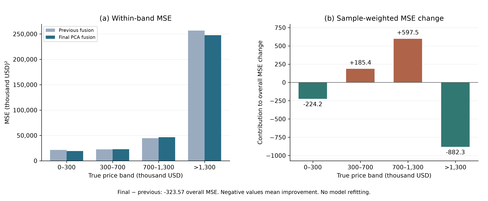
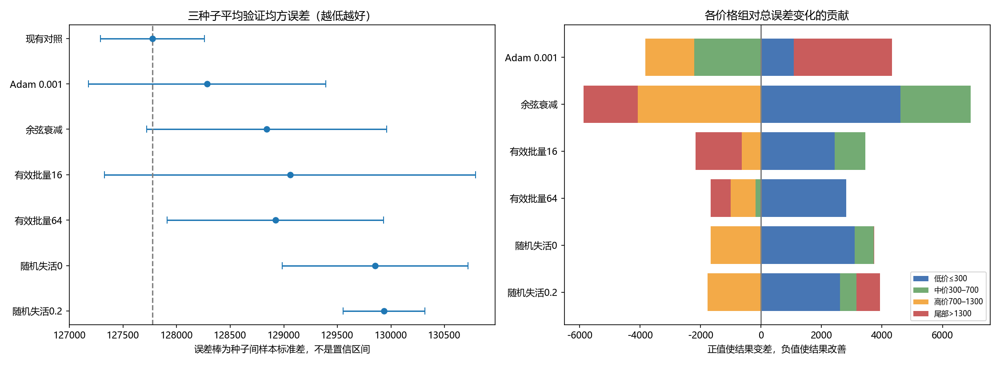
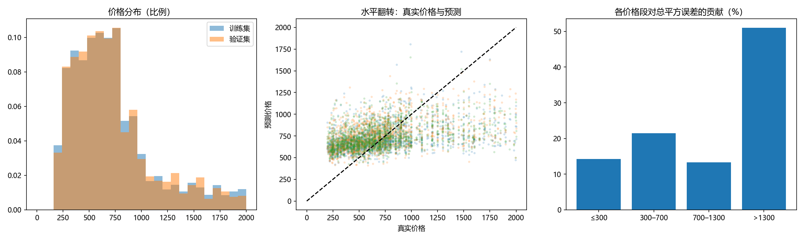
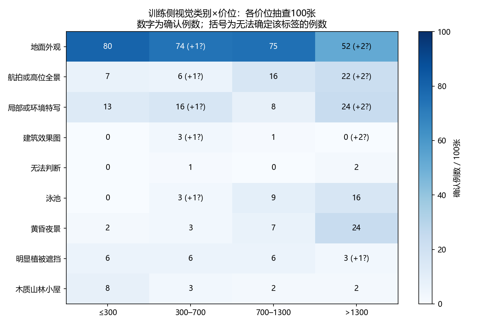
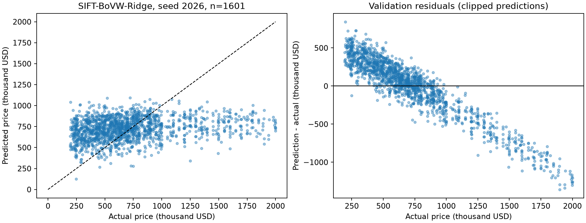
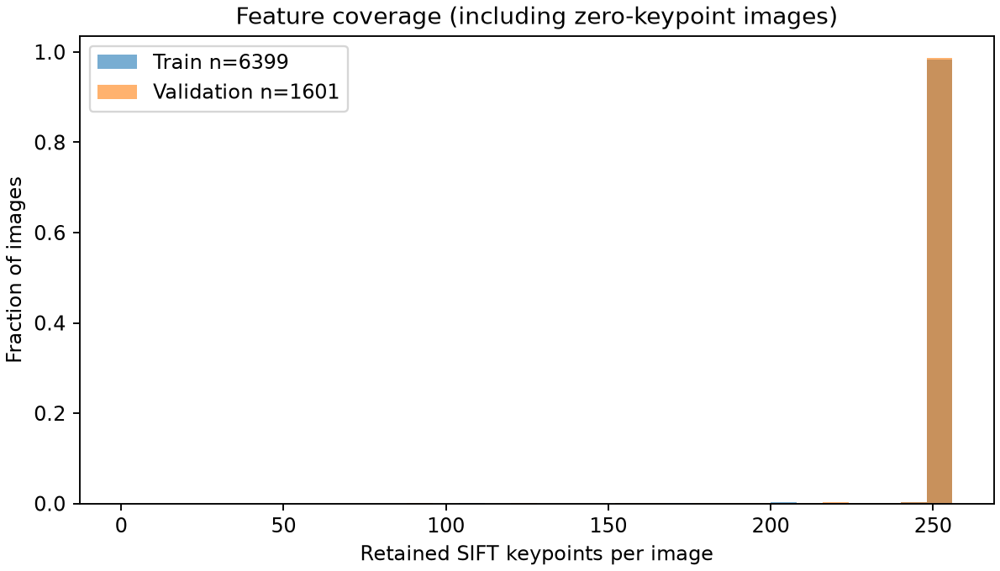

截至2026-10-19。用途：两人协作写report，不是最终代码提交目录。
中文草稿（云端为正文主版本） · 本次中文正文快照 · 表格显示值JSON · 来源和哈希清单
分清三类分数：开发验证52,201.21；训练侧meta-crossfit 52,210.22；历史公榜47,291.34608。固定验证n=1,601，训练n=6,399；最终提交用全部8,000标签重拟合。
新光度实验须使用同批新对照；不覆盖旧实验。未重新训练最终融合。表中MSE单位为(千美元)²，MAE为千美元。所有表格为已完成实验快照，非实时联动表。
相同1,601张验证图片。±为三种子样本标准差；其余为已选单次配置。MAE/尾部MSE为独立模型指标均值，不是种子集成。方法间差异不是单模块消融。
| 方法 / 证据类型 | 验证MSE | MAE | 尾部MSE |
|---|---|---|---|
| 训练均价（确定性） | 151,839.69 | 294.47 | 841,224.66 |
| SIFT–BoVW–Ridge（3种子） | 145,336.73 ± 1,091.58 | 288.66 | 757,394.09 |
| AlexNet无增强（3种子） | 127,774.42 ± 486.30 | 264.52 | 679,580.17 |
| AlexNet水平翻转（3种子） | 126,810.01 ± 1,902.23 | 268.02 | 651,373.83 |
| NaFlex核回归（已选配置） | 63,086.48 | 181.28 | 273,365.78 |
| PE-L PLS核回归（已选配置） | 59,483.31 | 171.73 | 266,009.73 |
| PCA PE-G核回归（已选配置） | 52,805.77 | 160.67 | 247,214.13 |
| 最终三分支融合（冻结） | 52,201.21 | 159.58 | 247,739.31 |
只列已完成阶段。所有数值来自对应阶段，不将候选视为最终提交。
| 阶段 | 已完成比较 | 主要证据 | 决策 |
|---|---|---|---|
| 预处理 | 补边、拉伸、裁剪、分辨率、标准化、低通 | 拉伸3种子MSE 127,774.42；滤波127,886.38 | 保留拉伸，无滤波 |
| 传统参照 | SIFT视觉词袋+岭回归 | 3种子MSE 145,336.73 | 作为传统参照 |
| CNN调优 | 学习率、优化器、调度、批量、Dropout等 | Adam/余弦/批量改动未胜出复核 | 保留原调优配置 |
| 历史增强 | 翻转、旋转、平移、裁剪、模糊、噪声、擦除 | 翻转均值改善0.75%；擦除复核失败 | CNN阶段保留翻转 |
| 光度补充 | 新对照、亮度、对比度；各1种子 | 对比度总体−1.93%，尾部+17.14% | 候选，不晋级 |
| 结构初筛 | 小核、多尺度、残差；各1种子 | 均差于126,601.97对照 | 不保留 |
| 冻结表征与融合 | NaFlex、PE-L PLS、PCA PE-G及融合 | 验证52,201.21；meta 52,210.22 | 最终冻结三分支 |
| 结果审计 | 分支消融、价位误差、校准增量筛选 | PE-G主导；校准未晋级 | 维持原提交 |
种子2026历史单项；全部独立对照无增强128,268.67，不叠加翻转。翻转三种子均值126,810.01，2/3改善；擦除128,300.21，1/3改善。
| 操作与参数 | 验证MSE | ΔMSE | 复核 / 决策 |
|---|---|---|---|
| 无增强 | 128,268.67 | 0 | 3种子对照 |
| 水平翻转 p=0.5 | 126,601.97 | −1,666.70 | 3种子2/3改善；保留 |
| 旋转 p=0.3，±3° | 129,526.18 | +1,257.51 | 单种子未通过 |
| 平移 p=0.3，各轴±3% | 129,162.73 | +894.06 | 单种子未通过 |
| 裁剪 p=0.3，面积90–100% | 130,222.98 | +1,954.31 | 单种子未通过 |
| 模糊 p=0.2，5×5，σ=0.3–0.8 | 129,941.36 | +1,672.69 | 单种子未通过 |
| 噪声 p=0.2，σ=0.01 | 131,174.53 | +2,905.87 | 单种子未通过 |
| 擦除 p=0.15，面积1–3% | 128,114.40 | −154.27 | 3种子仅1/3改善；放弃 |
2026-10-19，新对照131,389.94；相同初始化，单种子2026，均40轮。U(0.9,1.1)，概率1。对比度总体−1.93%但尾部+17.14%。不可与旧三种子均值配对；未更改最终融合。
| 本轮方案 | 验证MSE | MAE | 尾部MSE | ΔMSE |
|---|---|---|---|---|
| 新无增强对照 | 131,389.94 | 282.64 | 593,970.49 | 0 |
| 亮度 U(0.9,1.1) | 131,433.91 | 274.50 | 616,903.93 | +0.03% |
| 对比度 U(0.9,1.1) | 128,860.53 | 269.01 | 695,747.66 | −1.93% |
单种子2026，独立改变AlexNet结构。不是完整VGG/Inception/ResNet的模型比较。
| 结构配置 | 验证MSE | Δ vs 对照 | 阶段决策 |
|---|---|---|---|
| 水平翻转AlexNet | 126,601.97 | 0 | 对照 |
| 小卷积核堆叠 | 127,319.95 | +717.98 | 不保留 |
| 多尺度块 | 130,027.49 | +3,425.52 | 不保留 |
| 残差块 | 128,714.26 | +2,112.29 | 不保留 |
移除分支后只用训练OOF重拟合剩余权重。基础模型已选参，meta不是完全嵌套无偏CV。删除整条分支不等于PCA/PLS单操作消融；PE-L边际结果不一致。
| 分支 / 组合 | 验证MSE | MAE | 训练侧meta MSE |
|---|---|---|---|
| NaFlex单独 | 63,086.48 | 181.28 | 64,475.13 |
| PE-L PLS单独 | 59,483.31 | 171.73 | 59,515.43 |
| PCA PE-G单独 | 52,805.77 | 160.67 | 52,531.27 |
| 移除NaFlex，重拟合 | 52,597.50 | 160.21 | 52,359.30 |
| 移除PE-L PLS，重拟合 | 52,194.81 | 159.57 | 52,244.24 |
| 移除PCA PE-G，重拟合 | 57,372.90 | 168.45 | 57,694.20 |
| 等权融合 | 53,847.68 | 162.56 | 54,214.33 |
| 原冻结完整融合 | 52,201.21 | 159.58 | 52,210.22 |
价格/MAE/偏差单位为千美元；偏差=预测−真实。尾部来自训练90%分位1,300。该模型不是AlexNet。
| 价格区间 | n | MAE | 平均偏差 | 平方误差占比 |
|---|---|---|---|---|
| ≤300 | 169 | 104.03 | +93.72 | 3.92% |
| (300,700] | 775 | 112.22 | +70.27 | 21.23% |
| (700,1,300] | 498 | 171.89 | +2.75 | 27.72% |
| >1,300 | 159 | 410.90 | −385.16 | 47.13% |









